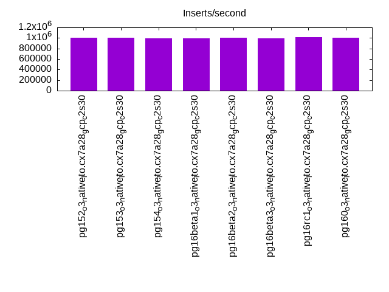
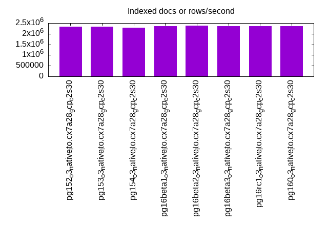
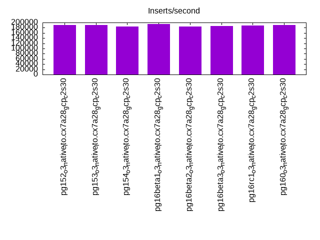
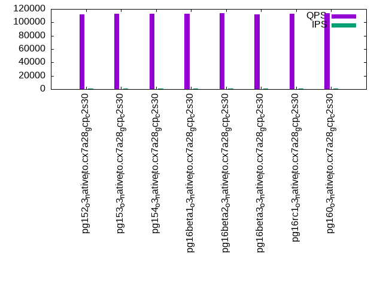
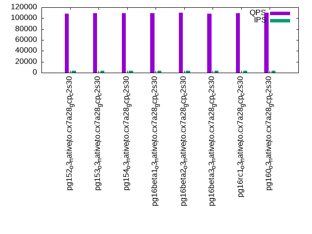
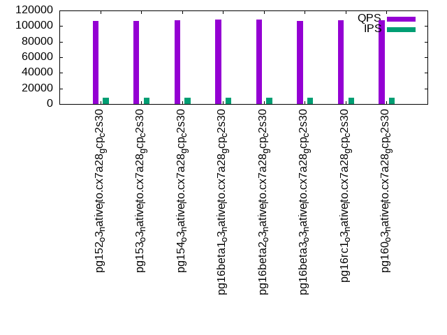

This is a report for the insert benchmark with 160M docs and 8 client(s). It is generated by scripts (bash, awk, sed) and Tufte might not be impressed. An overview of the insert benchmark is here and a short update is here. Below, by DBMS, I mean DBMS+version.config. An example is my8020.c10b40 where my means MySQL, 8020 is version 8.0.20 and c10b40 is the name for the configuration file.
The test server is a c2-standard-30 with 15 cores, hyperthreads disabled, 120G RAM and XFS with SW RAID 0 across 4 NVMe SSD. The benchmark was run with 8 clients and there were 1 or 3 connections per client (1 for queries or inserts without rate limits, 1+1 for rate limited inserts+deletes). It uses 8 tables, 1 per client. It loads 20M rows per table without secondary indexes, creates secondary indexes, then inserts 300M rows per table with a delete per insert to avoid growing the table. It then does 3 read+write tests for 7200s each that do queries as fast as possible with 100, 500 and then 1000 inserts/second/client concurrent with the queries. There are also deletes to match the inserts and avoid growing the table. The database is cached by Postgres. Clients and the DBMS share one server. The per-database configs are in the per-database subdirectories here.
The tested DBMS are:
The numbers are inserts/s for l.i0 and l.i1, indexed docs (or rows) /s for l.x and queries/s for q*.2. The values are the average rate over the entire test for inserts (IPS) and queries (QPS). The range of values for IPS and QPS is split into 3 parts: bottom 25%, middle 50%, top 25%. Values in the bottom 25% have a red background, values in the top 25% have a green background and values in the middle have no color. A gray background is used for values that can be ignored because the DBMS did not sustain the target insert rate. Red backgrounds are not used when the minimum value is within 80% of the max value.
| dbms | l.i0 | l.x | l.i1 | q100.1 | q500.1 | q1000.1 |
|---|---|---|---|---|---|---|
| pg152_o3_native_lto.cx7a28_gcp_c2s30 | 1006289 | 2320290 | 190946 | 112326 | 108533 | 106272 |
| pg153_o3_native_lto.cx7a28_gcp_c2s30 | 1000000 | 2320290 | 189918 | 113262 | 108885 | 106786 |
| pg154_o3_native_lto.cx7a28_gcp_c2s30 | 993789 | 2287143 | 184417 | 113152 | 109651 | 107446 |
| pg16beta1_o3_native_lto.cx7a28_gcp_c2s30 | 993789 | 2354412 | 194049 | 112928 | 109622 | 108006 |
| pg16beta2_o3_native_lto.cx7a28_gcp_c2s30 | 1000000 | 2389552 | 185500 | 113526 | 109912 | 108031 |
| pg16beta3_o3_native_lto.cx7a28_gcp_c2s30 | 993789 | 2354412 | 186712 | 112323 | 108753 | 106942 |
| pg16rc1_o3_native_lto.cx7a28_gcp_c2s30 | 1012658 | 2354412 | 188014 | 112762 | 109455 | 107715 |
| pg160_o3_native_lto.cx7a28_gcp_c2s30 | 1006289 | 2354412 | 190054 | 113965 | 109846 | 107079 |
This table has relative throughput, throughput for the DBMS relative to the DBMS in the first line, using the absolute throughput from the previous table. Values less than 0.95 have a yellow background. Values greater than 1.05 have a blue background.
| dbms | l.i0 | l.x | l.i1 | q100.1 | q500.1 | q1000.1 |
|---|---|---|---|---|---|---|
| pg152_o3_native_lto.cx7a28_gcp_c2s30 | 1.00 | 1.00 | 1.00 | 1.00 | 1.00 | 1.00 |
| pg153_o3_native_lto.cx7a28_gcp_c2s30 | 0.99 | 1.00 | 0.99 | 1.01 | 1.00 | 1.00 |
| pg154_o3_native_lto.cx7a28_gcp_c2s30 | 0.99 | 0.99 | 0.97 | 1.01 | 1.01 | 1.01 |
| pg16beta1_o3_native_lto.cx7a28_gcp_c2s30 | 0.99 | 1.01 | 1.02 | 1.01 | 1.01 | 1.02 |
| pg16beta2_o3_native_lto.cx7a28_gcp_c2s30 | 0.99 | 1.03 | 0.97 | 1.01 | 1.01 | 1.02 |
| pg16beta3_o3_native_lto.cx7a28_gcp_c2s30 | 0.99 | 1.01 | 0.98 | 1.00 | 1.00 | 1.01 |
| pg16rc1_o3_native_lto.cx7a28_gcp_c2s30 | 1.01 | 1.01 | 0.98 | 1.00 | 1.01 | 1.01 |
| pg160_o3_native_lto.cx7a28_gcp_c2s30 | 1.00 | 1.01 | 1.00 | 1.01 | 1.01 | 1.01 |
This lists the average rate of inserts/s for the tests that do inserts concurrent with queries. For such tests the query rate is listed in the table above. The read+write tests are setup so that the insert rate should match the target rate every second. Cells that are not at least 95% of the target have a red background to indicate a failure to satisfy the target.
| dbms | q100.1 | q500.1 | q1000.1 |
|---|---|---|---|
| pg152_o3_native_lto.cx7a28_gcp_c2s30 | 798 | 3992 | 7982 |
| pg153_o3_native_lto.cx7a28_gcp_c2s30 | 798 | 3992 | 7983 |
| pg154_o3_native_lto.cx7a28_gcp_c2s30 | 798 | 3991 | 7984 |
| pg16beta1_o3_native_lto.cx7a28_gcp_c2s30 | 798 | 3992 | 7983 |
| pg16beta2_o3_native_lto.cx7a28_gcp_c2s30 | 798 | 3991 | 7983 |
| pg16beta3_o3_native_lto.cx7a28_gcp_c2s30 | 798 | 3992 | 7983 |
| pg16rc1_o3_native_lto.cx7a28_gcp_c2s30 | 798 | 3991 | 7984 |
| pg160_o3_native_lto.cx7a28_gcp_c2s30 | 798 | 3992 | 7983 |
| target | 800 | 4000 | 8000 |
l.i0: load without secondary indexes. Graphs for performance per 1-second interval are here.
Average throughput:
Insert response time histogram: each cell has the percentage of responses that take <= the time in the header and max is the max response time in seconds. For the max column values in the top 25% of the range have a red background and in the bottom 25% of the range have a green background. The red background is not used when the min value is within 80% of the max value.
| dbms | 256us | 1ms | 4ms | 16ms | 64ms | 256ms | 1s | 4s | 16s | gt | max |
|---|---|---|---|---|---|---|---|---|---|---|---|
| pg152_o3_native_lto.cx7a28_gcp_c2s30 | 97.519 | 2.424 | 0.044 | 0.003 | 0.009 | 0.002 | 0.628 | ||||
| pg153_o3_native_lto.cx7a28_gcp_c2s30 | 97.841 | 2.100 | 0.047 | 0.001 | 0.009 | 0.002 | 0.458 | ||||
| pg154_o3_native_lto.cx7a28_gcp_c2s30 | 97.642 | 2.298 | 0.047 | 0.003 | 0.010 | 0.002 | 0.372 | ||||
| pg16beta1_o3_native_lto.cx7a28_gcp_c2s30 | 97.933 | 2.009 | 0.045 | 0.001 | 0.009 | 0.002 | 0.802 | ||||
| pg16beta2_o3_native_lto.cx7a28_gcp_c2s30 | 97.979 | 1.961 | 0.046 | 0.003 | 0.010 | 0.002 | 0.648 | ||||
| pg16beta3_o3_native_lto.cx7a28_gcp_c2s30 | 98.063 | 1.876 | 0.048 | 0.003 | 0.010 | 0.001 | 0.339 | ||||
| pg16rc1_o3_native_lto.cx7a28_gcp_c2s30 | 98.034 | 1.908 | 0.045 | 0.004 | 0.008 | 0.001 | 0.763 | ||||
| pg160_o3_native_lto.cx7a28_gcp_c2s30 | 98.128 | 1.810 | 0.052 | 0.002 | 0.006 | 0.001 | nonzero | 1.318 |
Performance metrics for the DBMS listed above. Some are normalized by throughput, others are not. Legend for results is here.
ips qps rps rmbps wps wmbps rpq rkbpq wpi wkbpi csps cpups cspq cpupq dbgb1 dbgb2 rss maxop p50 p99 tag 1006289 0 0 0.0 1176.0 375.6 0.000 0.000 0.001 0.382 84193 77.5 0.084 12 15.3 41.9 1.7 0.628 143596 42054 160m.pg152_o3_native_lto.cx7a28_gcp_c2s30 1000000 0 0 0.0 1164.4 364.9 0.000 0.000 0.001 0.374 84504 77.9 0.085 12 15.3 41.8 1.7 0.458 142545 51662 160m.pg153_o3_native_lto.cx7a28_gcp_c2s30 993789 0 0 0.0 1153.0 364.1 0.000 0.000 0.001 0.375 83797 76.5 0.084 12 15.3 42.0 1.7 0.372 142045 54341 160m.pg154_o3_native_lto.cx7a28_gcp_c2s30 993789 0 0 0.0 1150.3 361.7 0.000 0.000 0.001 0.373 82052 76.5 0.083 12 15.3 41.9 3.2 0.802 142646 54539 160m.pg16beta1_o3_native_lto.cx7a28_gcp_c2s30 1000000 0 0 0.0 1152.3 359.6 0.000 0.000 0.001 0.368 82835 76.3 0.083 11 15.3 42.0 4.7 0.648 143399 52761 160m.pg16beta2_o3_native_lto.cx7a28_gcp_c2s30 993789 0 0 0.0 1153.1 368.8 0.000 0.000 0.001 0.380 83241 76.9 0.084 12 15.3 42.0 1.7 0.339 141744 62330 160m.pg16beta3_o3_native_lto.cx7a28_gcp_c2s30 1012658 0 0 0.0 1179.7 373.3 0.000 0.000 0.001 0.378 84146 77.9 0.083 12 15.3 42.0 1.7 0.763 143545 48247 160m.pg16rc1_o3_native_lto.cx7a28_gcp_c2s30 1006289 0 0 0.0 1178.1 375.3 0.000 0.000 0.001 0.382 84251 77.9 0.084 12 15.3 42.1 1.7 1.318 143444 52144 160m.pg160_o3_native_lto.cx7a28_gcp_c2s30
l.x: create secondary indexes.
Average throughput:
Performance metrics for the DBMS listed above. Some are normalized by throughput, others are not. Legend for results is here.
ips qps rps rmbps wps wmbps rpq rkbpq wpi wkbpi csps cpups cspq cpupq dbgb1 dbgb2 rss maxop p50 p99 tag 2320290 0 0 0.0 1303.2 504.5 0.000 0.000 0.001 0.223 16089 41.2 0.007 3 29.4 61.5 13.1 0.002 NA NA 160m.pg152_o3_native_lto.cx7a28_gcp_c2s30 2320290 0 0 0.0 1374.5 534.4 0.000 0.000 0.001 0.236 17875 39.3 0.008 3 29.4 61.5 13.1 0.002 NA NA 160m.pg153_o3_native_lto.cx7a28_gcp_c2s30 2287143 0 0 0.0 1371.1 528.9 0.000 0.000 0.001 0.237 20986 38.5 0.009 3 29.4 61.5 13.1 0.002 NA NA 160m.pg154_o3_native_lto.cx7a28_gcp_c2s30 2354412 0 0 0.0 1366.7 517.0 0.000 0.000 0.001 0.225 18260 40.1 0.008 3 29.4 61.5 13.2 0.002 NA NA 160m.pg16beta1_o3_native_lto.cx7a28_gcp_c2s30 2389552 0 0 0.0 1408.0 546.5 0.000 0.000 0.001 0.234 17810 40.1 0.007 3 29.4 61.5 13.1 0.002 NA NA 160m.pg16beta2_o3_native_lto.cx7a28_gcp_c2s30 2354412 0 0 0.0 1334.8 508.3 0.000 0.000 0.001 0.221 18710 40.0 0.008 3 29.4 61.5 13.1 0.002 NA NA 160m.pg16beta3_o3_native_lto.cx7a28_gcp_c2s30 2354412 0 0 0.0 1350.3 509.7 0.000 0.000 0.001 0.222 15212 40.3 0.006 3 29.4 61.5 13.2 0.002 NA NA 160m.pg16rc1_o3_native_lto.cx7a28_gcp_c2s30 2354412 0 0 0.0 1333.2 509.1 0.000 0.000 0.001 0.221 16719 40.4 0.007 3 29.4 61.5 13.2 0.002 NA NA 160m.pg160_o3_native_lto.cx7a28_gcp_c2s30
l.i1: continue load after secondary indexes created. Graphs for performance per 1-second interval are here.
Average throughput:
Insert response time histogram: each cell has the percentage of responses that take <= the time in the header and max is the max response time in seconds. For the max column values in the top 25% of the range have a red background and in the bottom 25% of the range have a green background. The red background is not used when the min value is within 80% of the max value.
| dbms | 256us | 1ms | 4ms | 16ms | 64ms | 256ms | 1s | 4s | 16s | gt | max |
|---|---|---|---|---|---|---|---|---|---|---|---|
| pg152_o3_native_lto.cx7a28_gcp_c2s30 | 0.046 | 98.890 | 0.434 | 0.582 | 0.048 | nonzero | 0.312 | ||||
| pg153_o3_native_lto.cx7a28_gcp_c2s30 | 0.012 | 98.924 | 0.445 | 0.567 | 0.051 | nonzero | 0.368 | ||||
| pg154_o3_native_lto.cx7a28_gcp_c2s30 | 0.041 | 98.879 | 0.440 | 0.591 | 0.049 | 0.001 | 0.459 | ||||
| pg16beta1_o3_native_lto.cx7a28_gcp_c2s30 | 0.401 | 98.588 | 0.415 | 0.548 | 0.048 | nonzero | 0.322 | ||||
| pg16beta2_o3_native_lto.cx7a28_gcp_c2s30 | 0.078 | 98.883 | 0.431 | 0.555 | 0.053 | 0.001 | nonzero | 1.334 | |||
| pg16beta3_o3_native_lto.cx7a28_gcp_c2s30 | 0.207 | 98.725 | 0.433 | 0.586 | 0.049 | 0.204 | |||||
| pg16rc1_o3_native_lto.cx7a28_gcp_c2s30 | 0.273 | 98.683 | 0.426 | 0.570 | 0.048 | nonzero | 0.359 | ||||
| pg160_o3_native_lto.cx7a28_gcp_c2s30 | 0.059 | 98.882 | 0.425 | 0.582 | 0.052 | nonzero | 0.356 |
Delete response time histogram: each cell has the percentage of responses that take <= the time in the header and max is the max response time in seconds. For the max column values in the top 25% of the range have a red background and in the bottom 25% of the range have a green background. The red background is not used when the min value is within 80% of the max value.
| dbms | 256us | 1ms | 4ms | 16ms | 64ms | 256ms | 1s | 4s | 16s | gt | max |
|---|---|---|---|---|---|---|---|---|---|---|---|
| pg152_o3_native_lto.cx7a28_gcp_c2s30 | 75.908 | 9.840 | 10.057 | 3.824 | 0.339 | 0.032 | nonzero | 0.313 | |||
| pg153_o3_native_lto.cx7a28_gcp_c2s30 | 76.122 | 9.513 | 9.873 | 4.132 | 0.327 | 0.034 | nonzero | 0.366 | |||
| pg154_o3_native_lto.cx7a28_gcp_c2s30 | 76.672 | 8.951 | 9.675 | 4.311 | 0.355 | 0.034 | nonzero | 0.448 | |||
| pg16beta1_o3_native_lto.cx7a28_gcp_c2s30 | 76.149 | 9.618 | 10.206 | 3.664 | 0.329 | 0.033 | nonzero | 0.321 | |||
| pg16beta2_o3_native_lto.cx7a28_gcp_c2s30 | 76.001 | 9.536 | 9.408 | 4.674 | 0.343 | 0.038 | nonzero | nonzero | 1.338 | ||
| pg16beta3_o3_native_lto.cx7a28_gcp_c2s30 | 75.287 | 9.990 | 10.064 | 4.268 | 0.357 | 0.035 | 0.165 | ||||
| pg16rc1_o3_native_lto.cx7a28_gcp_c2s30 | 76.193 | 9.252 | 9.990 | 4.184 | 0.349 | 0.034 | nonzero | 0.342 | |||
| pg160_o3_native_lto.cx7a28_gcp_c2s30 | 76.462 | 9.020 | 9.860 | 4.264 | 0.358 | 0.036 | nonzero | 0.306 |
Performance metrics for the DBMS listed above. Some are normalized by throughput, others are not. Legend for results is here.
ips qps rps rmbps wps wmbps rpq rkbpq wpi wkbpi csps cpups cspq cpupq dbgb1 dbgb2 rss maxop p50 p99 tag 190946 0 0 0.0 10662.5 897.6 0.000 0.000 0.056 4.814 75246 70.8 0.394 56 41.7 73.8 36.3 0.312 29268 2397 160m.pg152_o3_native_lto.cx7a28_gcp_c2s30 189918 0 0 0.0 10728.0 892.0 0.000 0.000 0.056 4.809 75673 71.0 0.398 56 41.8 73.9 35.5 0.368 29030 2497 160m.pg153_o3_native_lto.cx7a28_gcp_c2s30 184417 0 0 0.0 10653.3 881.7 0.000 0.000 0.058 4.896 72614 69.9 0.394 57 41.7 73.8 19.8 0.459 27071 2349 160m.pg154_o3_native_lto.cx7a28_gcp_c2s30 194049 0 0 0.0 10221.6 879.9 0.000 0.000 0.053 4.643 76507 69.5 0.394 54 41.7 73.8 34.2 0.322 29578 2348 160m.pg16beta1_o3_native_lto.cx7a28_gcp_c2s30 185500 0 0 0.0 10584.7 871.0 0.000 0.000 0.057 4.808 73103 69.4 0.394 56 41.7 73.7 21.2 1.334 27214 2148 160m.pg16beta2_o3_native_lto.cx7a28_gcp_c2s30 186712 0 0 0.0 10705.3 887.2 0.000 0.000 0.057 4.866 74010 69.7 0.396 56 41.7 73.7 25.7 0.204 27370 2697 160m.pg16beta3_o3_native_lto.cx7a28_gcp_c2s30 188014 0 0 0.0 10270.1 869.1 0.000 0.000 0.055 4.733 74525 69.3 0.396 55 41.7 73.7 35.5 0.359 28731 2999 160m.pg16rc1_o3_native_lto.cx7a28_gcp_c2s30 190054 0 0 0.0 10581.5 889.7 0.000 0.000 0.056 4.794 74537 70.2 0.392 55 41.6 73.7 28.7 0.356 28169 2597 160m.pg160_o3_native_lto.cx7a28_gcp_c2s30
q100.1: range queries with 100 insert/s per client. Graphs for performance per 1-second interval are here.
Average throughput:
Query response time histogram: each cell has the percentage of responses that take <= the time in the header and max is the max response time in seconds. For max values in the top 25% of the range have a red background and in the bottom 25% of the range have a green background. The red background is not used when the min value is within 80% of the max value.
| dbms | 256us | 1ms | 4ms | 16ms | 64ms | 256ms | 1s | 4s | 16s | gt | max |
|---|---|---|---|---|---|---|---|---|---|---|---|
| pg152_o3_native_lto.cx7a28_gcp_c2s30 | 99.996 | 0.003 | 0.001 | nonzero | 0.010 | ||||||
| pg153_o3_native_lto.cx7a28_gcp_c2s30 | 99.996 | 0.003 | 0.001 | nonzero | 0.008 | ||||||
| pg154_o3_native_lto.cx7a28_gcp_c2s30 | 99.996 | 0.003 | 0.001 | nonzero | 0.007 | ||||||
| pg16beta1_o3_native_lto.cx7a28_gcp_c2s30 | 99.996 | 0.003 | 0.001 | nonzero | 0.010 | ||||||
| pg16beta2_o3_native_lto.cx7a28_gcp_c2s30 | 99.996 | 0.003 | 0.001 | nonzero | 0.009 | ||||||
| pg16beta3_o3_native_lto.cx7a28_gcp_c2s30 | 99.996 | 0.003 | 0.001 | nonzero | 0.008 | ||||||
| pg16rc1_o3_native_lto.cx7a28_gcp_c2s30 | 99.997 | 0.003 | 0.001 | nonzero | 0.009 | ||||||
| pg160_o3_native_lto.cx7a28_gcp_c2s30 | 99.996 | 0.003 | 0.001 | nonzero | 0.008 |
Insert response time histogram: each cell has the percentage of responses that take <= the time in the header and max is the max response time in seconds. For max values in the top 25% of the range have a red background and in the bottom 25% of the range have a green background. The red background is not used when the min value is within 80% of the max value.
| dbms | 256us | 1ms | 4ms | 16ms | 64ms | 256ms | 1s | 4s | 16s | gt | max |
|---|---|---|---|---|---|---|---|---|---|---|---|
| pg152_o3_native_lto.cx7a28_gcp_c2s30 | 99.944 | 0.056 | 0.008 | ||||||||
| pg153_o3_native_lto.cx7a28_gcp_c2s30 | 99.931 | 0.069 | 0.010 | ||||||||
| pg154_o3_native_lto.cx7a28_gcp_c2s30 | 99.938 | 0.062 | 0.007 | ||||||||
| pg16beta1_o3_native_lto.cx7a28_gcp_c2s30 | 99.969 | 0.031 | 0.006 | ||||||||
| pg16beta2_o3_native_lto.cx7a28_gcp_c2s30 | 99.947 | 0.053 | 0.012 | ||||||||
| pg16beta3_o3_native_lto.cx7a28_gcp_c2s30 | 99.955 | 0.045 | 0.009 | ||||||||
| pg16rc1_o3_native_lto.cx7a28_gcp_c2s30 | 99.953 | 0.047 | 0.009 | ||||||||
| pg160_o3_native_lto.cx7a28_gcp_c2s30 | 99.959 | 0.041 | 0.008 |
Delete response time histogram: each cell has the percentage of responses that take <= the time in the header and max is the max response time in seconds. For max values in the top 25% of the range have a red background and in the bottom 25% of the range have a green background. The red background is not used when the min value is within 80% of the max value.
| dbms | 256us | 1ms | 4ms | 16ms | 64ms | 256ms | 1s | 4s | 16s | gt | max |
|---|---|---|---|---|---|---|---|---|---|---|---|
| pg152_o3_native_lto.cx7a28_gcp_c2s30 | 68.910 | 11.161 | 17.227 | 2.701 | 0.011 | ||||||
| pg153_o3_native_lto.cx7a28_gcp_c2s30 | 68.650 | 12.943 | 16.378 | 2.030 | 0.010 | ||||||
| pg154_o3_native_lto.cx7a28_gcp_c2s30 | 65.877 | 13.259 | 15.831 | 5.034 | 0.013 | ||||||
| pg16beta1_o3_native_lto.cx7a28_gcp_c2s30 | 62.528 | 13.499 | 18.937 | 5.036 | 0.011 | ||||||
| pg16beta2_o3_native_lto.cx7a28_gcp_c2s30 | 65.753 | 16.042 | 14.577 | 3.628 | 0.008 | ||||||
| pg16beta3_o3_native_lto.cx7a28_gcp_c2s30 | 64.930 | 12.845 | 18.634 | 3.592 | 0.012 | ||||||
| pg16rc1_o3_native_lto.cx7a28_gcp_c2s30 | 66.127 | 10.901 | 19.912 | 3.060 | 0.009 | ||||||
| pg160_o3_native_lto.cx7a28_gcp_c2s30 | 73.913 | 13.093 | 11.361 | 1.633 | 0.008 |
Performance metrics for the DBMS listed above. Some are normalized by throughput, others are not. Legend for results is here.
ips qps rps rmbps wps wmbps rpq rkbpq wpi wkbpi csps cpups cspq cpupq dbgb1 dbgb2 rss maxop p50 p99 tag 798 112326 0 0.0 330.6 11.9 0.000 0.000 0.414 15.268 427892 52.8 3.809 71 41.7 73.8 1.0 0.010 14054 13761 160m.pg152_o3_native_lto.cx7a28_gcp_c2s30 798 113262 0 0.0 314.0 11.4 0.000 0.000 0.393 14.672 431294 52.9 3.808 70 41.8 73.9 11.5 0.008 14070 13809 160m.pg153_o3_native_lto.cx7a28_gcp_c2s30 798 113152 0 0.0 290.3 10.6 0.000 0.000 0.364 13.587 430877 52.9 3.808 70 41.8 73.8 42.6 0.007 14065 13809 160m.pg154_o3_native_lto.cx7a28_gcp_c2s30 798 112928 0 0.0 388.3 12.5 0.000 0.000 0.486 15.985 430136 53.0 3.809 70 41.7 73.8 8.1 0.010 14182 13921 160m.pg16beta1_o3_native_lto.cx7a28_gcp_c2s30 798 113526 0 0.0 309.3 11.0 0.000 0.000 0.387 14.127 432335 52.9 3.808 70 41.7 73.7 11.4 0.009 14134 13878 160m.pg16beta2_o3_native_lto.cx7a28_gcp_c2s30 798 112323 0 0.0 395.8 12.3 0.000 0.000 0.496 15.727 427852 52.9 3.809 71 41.7 73.7 6.5 0.008 13937 13686 160m.pg16beta3_o3_native_lto.cx7a28_gcp_c2s30 798 112762 0 0.0 313.8 11.4 0.000 0.000 0.393 14.633 429497 52.8 3.809 70 41.7 73.7 10.8 0.009 14070 13798 160m.pg16rc1_o3_native_lto.cx7a28_gcp_c2s30 798 113965 0 0.0 287.4 10.4 0.000 0.000 0.360 13.356 433962 52.7 3.808 69 41.6 73.6 10.7 0.008 14224 13944 160m.pg160_o3_native_lto.cx7a28_gcp_c2s30
q500.1: range queries with 500 insert/s per client. Graphs for performance per 1-second interval are here.
Average throughput:
Query response time histogram: each cell has the percentage of responses that take <= the time in the header and max is the max response time in seconds. For max values in the top 25% of the range have a red background and in the bottom 25% of the range have a green background. The red background is not used when the min value is within 80% of the max value.
| dbms | 256us | 1ms | 4ms | 16ms | 64ms | 256ms | 1s | 4s | 16s | gt | max |
|---|---|---|---|---|---|---|---|---|---|---|---|
| pg152_o3_native_lto.cx7a28_gcp_c2s30 | 99.988 | 0.008 | 0.004 | nonzero | nonzero | nonzero | 0.071 | ||||
| pg153_o3_native_lto.cx7a28_gcp_c2s30 | 99.989 | 0.007 | 0.004 | nonzero | nonzero | nonzero | 0.082 | ||||
| pg154_o3_native_lto.cx7a28_gcp_c2s30 | 99.989 | 0.007 | 0.004 | nonzero | nonzero | nonzero | 0.065 | ||||
| pg16beta1_o3_native_lto.cx7a28_gcp_c2s30 | 99.989 | 0.008 | 0.004 | nonzero | nonzero | nonzero | 0.077 | ||||
| pg16beta2_o3_native_lto.cx7a28_gcp_c2s30 | 99.988 | 0.008 | 0.004 | nonzero | nonzero | 0.064 | |||||
| pg16beta3_o3_native_lto.cx7a28_gcp_c2s30 | 99.987 | 0.009 | 0.005 | nonzero | nonzero | 0.023 | |||||
| pg16rc1_o3_native_lto.cx7a28_gcp_c2s30 | 99.986 | 0.009 | 0.005 | nonzero | nonzero | nonzero | 0.089 | ||||
| pg160_o3_native_lto.cx7a28_gcp_c2s30 | 99.987 | 0.008 | 0.004 | nonzero | nonzero | nonzero | 0.073 |
Insert response time histogram: each cell has the percentage of responses that take <= the time in the header and max is the max response time in seconds. For max values in the top 25% of the range have a red background and in the bottom 25% of the range have a green background. The red background is not used when the min value is within 80% of the max value.
| dbms | 256us | 1ms | 4ms | 16ms | 64ms | 256ms | 1s | 4s | 16s | gt | max |
|---|---|---|---|---|---|---|---|---|---|---|---|
| pg152_o3_native_lto.cx7a28_gcp_c2s30 | 99.946 | 0.053 | 0.001 | 0.017 | |||||||
| pg153_o3_native_lto.cx7a28_gcp_c2s30 | 99.969 | 0.030 | nonzero | 0.025 | |||||||
| pg154_o3_native_lto.cx7a28_gcp_c2s30 | 99.965 | 0.034 | 0.001 | 0.018 | |||||||
| pg16beta1_o3_native_lto.cx7a28_gcp_c2s30 | 99.972 | 0.027 | 0.001 | 0.025 | |||||||
| pg16beta2_o3_native_lto.cx7a28_gcp_c2s30 | 99.968 | 0.032 | 0.001 | 0.017 | |||||||
| pg16beta3_o3_native_lto.cx7a28_gcp_c2s30 | 99.952 | 0.047 | 0.001 | 0.021 | |||||||
| pg16rc1_o3_native_lto.cx7a28_gcp_c2s30 | 99.935 | 0.064 | nonzero | nonzero | 0.085 | ||||||
| pg160_o3_native_lto.cx7a28_gcp_c2s30 | 99.953 | 0.047 | 0.001 | 0.018 |
Delete response time histogram: each cell has the percentage of responses that take <= the time in the header and max is the max response time in seconds. For max values in the top 25% of the range have a red background and in the bottom 25% of the range have a green background. The red background is not used when the min value is within 80% of the max value.
| dbms | 256us | 1ms | 4ms | 16ms | 64ms | 256ms | 1s | 4s | 16s | gt | max |
|---|---|---|---|---|---|---|---|---|---|---|---|
| pg152_o3_native_lto.cx7a28_gcp_c2s30 | 77.525 | 10.395 | 9.728 | 2.351 | 0.001 | 0.022 | |||||
| pg153_o3_native_lto.cx7a28_gcp_c2s30 | 77.627 | 7.837 | 12.301 | 2.234 | 0.001 | 0.021 | |||||
| pg154_o3_native_lto.cx7a28_gcp_c2s30 | 78.167 | 8.274 | 10.581 | 2.977 | nonzero | 0.018 | |||||
| pg16beta1_o3_native_lto.cx7a28_gcp_c2s30 | 77.952 | 9.448 | 12.005 | 0.595 | 0.016 | ||||||
| pg16beta2_o3_native_lto.cx7a28_gcp_c2s30 | 76.999 | 9.664 | 10.063 | 3.273 | nonzero | 0.018 | |||||
| pg16beta3_o3_native_lto.cx7a28_gcp_c2s30 | 76.987 | 11.494 | 9.597 | 1.921 | 0.001 | 0.021 | |||||
| pg16rc1_o3_native_lto.cx7a28_gcp_c2s30 | 77.790 | 11.442 | 8.281 | 2.486 | 0.001 | nonzero | 0.084 | ||||
| pg160_o3_native_lto.cx7a28_gcp_c2s30 | 77.230 | 8.709 | 6.759 | 7.301 | 0.001 | 0.021 |
Performance metrics for the DBMS listed above. Some are normalized by throughput, others are not. Legend for results is here.
ips qps rps rmbps wps wmbps rpq rkbpq wpi wkbpi csps cpups cspq cpupq dbgb1 dbgb2 rss maxop p50 p99 tag 3992 108533 0 0.0 256.8 20.4 0.000 0.000 0.064 5.226 413972 53.7 3.814 74 41.7 73.7 19.1 0.071 13591 11363 160m.pg152_o3_native_lto.cx7a28_gcp_c2s30 3992 108885 0 0.0 260.0 20.4 0.000 0.000 0.065 5.232 415315 53.8 3.814 74 41.7 73.7 28.5 0.082 13617 11384 160m.pg153_o3_native_lto.cx7a28_gcp_c2s30 3991 109651 0 0.0 256.3 20.2 0.000 0.000 0.064 5.179 418267 53.9 3.815 74 41.7 73.8 11.7 0.065 13617 11385 160m.pg154_o3_native_lto.cx7a28_gcp_c2s30 3992 109622 0 0.0 219.4 21.1 0.000 0.000 0.055 5.409 418289 53.8 3.816 74 41.6 73.7 2.9 0.077 13729 11475 160m.pg16beta1_o3_native_lto.cx7a28_gcp_c2s30 3991 109912 0 0.0 252.9 20.0 0.000 0.000 0.063 5.134 419243 53.8 3.814 73 41.6 73.7 14.6 0.064 13713 11332 160m.pg16beta2_o3_native_lto.cx7a28_gcp_c2s30 3992 108753 0 0.0 226.1 21.1 0.000 0.000 0.057 5.420 414859 53.8 3.815 74 41.7 73.7 11.1 0.023 13441 11172 160m.pg16beta3_o3_native_lto.cx7a28_gcp_c2s30 3991 109455 0 0.0 257.1 20.4 0.000 0.000 0.064 5.229 417437 53.7 3.814 74 41.6 73.6 17.9 0.089 13745 11443 160m.pg16rc1_o3_native_lto.cx7a28_gcp_c2s30 3992 109846 0 0.0 251.0 20.0 0.000 0.000 0.063 5.135 418851 53.9 3.813 74 41.5 73.6 9.8 0.073 13793 11512 160m.pg160_o3_native_lto.cx7a28_gcp_c2s30
q1000.1: range queries with 1000 insert/s per client. Graphs for performance per 1-second interval are here.
Average throughput:
Query response time histogram: each cell has the percentage of responses that take <= the time in the header and max is the max response time in seconds. For max values in the top 25% of the range have a red background and in the bottom 25% of the range have a green background. The red background is not used when the min value is within 80% of the max value.
| dbms | 256us | 1ms | 4ms | 16ms | 64ms | 256ms | 1s | 4s | 16s | gt | max |
|---|---|---|---|---|---|---|---|---|---|---|---|
| pg152_o3_native_lto.cx7a28_gcp_c2s30 | 99.958 | 0.033 | 0.008 | nonzero | nonzero | nonzero | 0.091 | ||||
| pg153_o3_native_lto.cx7a28_gcp_c2s30 | 99.957 | 0.033 | 0.009 | nonzero | nonzero | nonzero | 0.070 | ||||
| pg154_o3_native_lto.cx7a28_gcp_c2s30 | 99.961 | 0.031 | 0.008 | nonzero | nonzero | nonzero | 0.134 | ||||
| pg16beta1_o3_native_lto.cx7a28_gcp_c2s30 | 99.949 | 0.040 | 0.011 | nonzero | nonzero | nonzero | 0.088 | ||||
| pg16beta2_o3_native_lto.cx7a28_gcp_c2s30 | 99.954 | 0.035 | 0.010 | nonzero | nonzero | nonzero | 0.077 | ||||
| pg16beta3_o3_native_lto.cx7a28_gcp_c2s30 | 99.955 | 0.035 | 0.010 | nonzero | nonzero | nonzero | 0.089 | ||||
| pg16rc1_o3_native_lto.cx7a28_gcp_c2s30 | 99.961 | 0.031 | 0.008 | nonzero | nonzero | nonzero | 0.074 | ||||
| pg160_o3_native_lto.cx7a28_gcp_c2s30 | 99.960 | 0.031 | 0.009 | nonzero | nonzero | 0.062 |
Insert response time histogram: each cell has the percentage of responses that take <= the time in the header and max is the max response time in seconds. For max values in the top 25% of the range have a red background and in the bottom 25% of the range have a green background. The red background is not used when the min value is within 80% of the max value.
| dbms | 256us | 1ms | 4ms | 16ms | 64ms | 256ms | 1s | 4s | 16s | gt | max |
|---|---|---|---|---|---|---|---|---|---|---|---|
| pg152_o3_native_lto.cx7a28_gcp_c2s30 | 99.761 | 0.231 | 0.007 | 0.001 | 0.076 | ||||||
| pg153_o3_native_lto.cx7a28_gcp_c2s30 | 99.761 | 0.232 | 0.008 | 0.047 | |||||||
| pg154_o3_native_lto.cx7a28_gcp_c2s30 | 99.757 | 0.228 | 0.013 | 0.002 | 0.133 | ||||||
| pg16beta1_o3_native_lto.cx7a28_gcp_c2s30 | 99.676 | 0.308 | 0.016 | 0.060 | |||||||
| pg16beta2_o3_native_lto.cx7a28_gcp_c2s30 | 99.567 | 0.418 | 0.015 | nonzero | 0.082 | ||||||
| pg16beta3_o3_native_lto.cx7a28_gcp_c2s30 | 99.645 | 0.344 | 0.010 | 0.001 | 0.088 | ||||||
| pg16rc1_o3_native_lto.cx7a28_gcp_c2s30 | nonzero | 99.732 | 0.256 | 0.012 | 0.045 | ||||||
| pg160_o3_native_lto.cx7a28_gcp_c2s30 | 99.677 | 0.308 | 0.015 | nonzero | 0.065 |
Delete response time histogram: each cell has the percentage of responses that take <= the time in the header and max is the max response time in seconds. For max values in the top 25% of the range have a red background and in the bottom 25% of the range have a green background. The red background is not used when the min value is within 80% of the max value.
| dbms | 256us | 1ms | 4ms | 16ms | 64ms | 256ms | 1s | 4s | 16s | gt | max |
|---|---|---|---|---|---|---|---|---|---|---|---|
| pg152_o3_native_lto.cx7a28_gcp_c2s30 | 78.606 | 12.672 | 7.170 | 1.550 | 0.002 | nonzero | 0.072 | ||||
| pg153_o3_native_lto.cx7a28_gcp_c2s30 | 77.808 | 12.670 | 8.662 | 0.858 | 0.002 | 0.030 | |||||
| pg154_o3_native_lto.cx7a28_gcp_c2s30 | 77.993 | 11.100 | 10.164 | 0.738 | 0.004 | 0.001 | 0.126 | ||||
| pg16beta1_o3_native_lto.cx7a28_gcp_c2s30 | 77.244 | 14.874 | 7.684 | 0.195 | 0.003 | 0.048 | |||||
| pg16beta2_o3_native_lto.cx7a28_gcp_c2s30 | 77.072 | 11.469 | 9.957 | 1.499 | 0.003 | nonzero | 0.080 | ||||
| pg16beta3_o3_native_lto.cx7a28_gcp_c2s30 | 77.736 | 12.115 | 8.041 | 2.104 | 0.004 | nonzero | 0.086 | ||||
| pg16rc1_o3_native_lto.cx7a28_gcp_c2s30 | 78.453 | 11.786 | 8.122 | 1.634 | 0.005 | 0.043 | |||||
| pg160_o3_native_lto.cx7a28_gcp_c2s30 | 77.595 | 7.949 | 10.162 | 4.289 | 0.005 | 0.035 |
Performance metrics for the DBMS listed above. Some are normalized by throughput, others are not. Legend for results is here.
ips qps rps rmbps wps wmbps rpq rkbpq wpi wkbpi csps cpups cspq cpupq dbgb1 dbgb2 rss maxop p50 p99 tag 7982 106272 0 0.0 400.1 37.7 0.000 0.000 0.050 4.834 405408 54.9 3.815 77 41.5 73.6 18.5 0.091 13233 10900 160m.pg152_o3_native_lto.cx7a28_gcp_c2s30 7983 106786 0 0.0 406.7 37.6 0.000 0.000 0.051 4.829 407256 54.9 3.814 77 41.6 73.7 17.7 0.070 13351 11176 160m.pg153_o3_native_lto.cx7a28_gcp_c2s30 7984 107446 0 0.0 398.9 37.6 0.000 0.000 0.050 4.823 409928 54.9 3.815 77 41.6 73.6 37.6 0.134 13505 10868 160m.pg154_o3_native_lto.cx7a28_gcp_c2s30 7983 108006 0 0.0 402.4 37.9 0.000 0.000 0.050 4.857 411375 54.8 3.809 76 41.5 73.5 16.4 0.088 13649 11332 160m.pg16beta1_o3_native_lto.cx7a28_gcp_c2s30 7983 108031 0 0.0 397.5 37.8 0.000 0.000 0.050 4.846 411571 54.9 3.810 76 41.6 73.6 20.4 0.077 13537 11264 160m.pg16beta2_o3_native_lto.cx7a28_gcp_c2s30 7983 106942 0 0.0 401.4 37.9 0.000 0.000 0.050 4.864 407635 54.8 3.812 77 41.4 73.5 28.4 0.089 13297 11140 160m.pg16beta3_o3_native_lto.cx7a28_gcp_c2s30 7984 107715 0 0.0 402.4 37.5 0.000 0.000 0.050 4.814 410868 54.9 3.814 76 41.5 73.6 4.0 0.074 13601 11332 160m.pg16rc1_o3_native_lto.cx7a28_gcp_c2s30 7983 107079 0 0.0 394.1 37.6 0.000 0.000 0.049 4.823 408143 55.1 3.812 77 41.5 73.6 3.3 0.062 13393 11268 160m.pg160_o3_native_lto.cx7a28_gcp_c2s30
l.i0: load without secondary indexes
Performance metrics for all DBMS, not just the ones listed above. Some are normalized by throughput, others are not. Legend for results is here.
ips qps rps rmbps wps wmbps rpq rkbpq wpi wkbpi csps cpups cspq cpupq dbgb1 dbgb2 rss maxop p50 p99 tag 1006289 0 0 0.0 1176.0 375.6 0.000 0.000 0.001 0.382 84193 77.5 0.084 12 15.3 41.9 1.7 0.628 143596 42054 160m.pg152_o3_native_lto.cx7a28_gcp_c2s30 1000000 0 0 0.0 1164.4 364.9 0.000 0.000 0.001 0.374 84504 77.9 0.085 12 15.3 41.8 1.7 0.458 142545 51662 160m.pg153_o3_native_lto.cx7a28_gcp_c2s30 993789 0 0 0.0 1153.0 364.1 0.000 0.000 0.001 0.375 83797 76.5 0.084 12 15.3 42.0 1.7 0.372 142045 54341 160m.pg154_o3_native_lto.cx7a28_gcp_c2s30 993789 0 0 0.0 1150.3 361.7 0.000 0.000 0.001 0.373 82052 76.5 0.083 12 15.3 41.9 3.2 0.802 142646 54539 160m.pg16beta1_o3_native_lto.cx7a28_gcp_c2s30 1000000 0 0 0.0 1152.3 359.6 0.000 0.000 0.001 0.368 82835 76.3 0.083 11 15.3 42.0 4.7 0.648 143399 52761 160m.pg16beta2_o3_native_lto.cx7a28_gcp_c2s30 993789 0 0 0.0 1153.1 368.8 0.000 0.000 0.001 0.380 83241 76.9 0.084 12 15.3 42.0 1.7 0.339 141744 62330 160m.pg16beta3_o3_native_lto.cx7a28_gcp_c2s30 1012658 0 0 0.0 1179.7 373.3 0.000 0.000 0.001 0.378 84146 77.9 0.083 12 15.3 42.0 1.7 0.763 143545 48247 160m.pg16rc1_o3_native_lto.cx7a28_gcp_c2s30 1006289 0 0 0.0 1178.1 375.3 0.000 0.000 0.001 0.382 84251 77.9 0.084 12 15.3 42.1 1.7 1.318 143444 52144 160m.pg160_o3_native_lto.cx7a28_gcp_c2s30
l.x: create secondary indexes
Performance metrics for all DBMS, not just the ones listed above. Some are normalized by throughput, others are not. Legend for results is here.
ips qps rps rmbps wps wmbps rpq rkbpq wpi wkbpi csps cpups cspq cpupq dbgb1 dbgb2 rss maxop p50 p99 tag 2320290 0 0 0.0 1303.2 504.5 0.000 0.000 0.001 0.223 16089 41.2 0.007 3 29.4 61.5 13.1 0.002 NA NA 160m.pg152_o3_native_lto.cx7a28_gcp_c2s30 2320290 0 0 0.0 1374.5 534.4 0.000 0.000 0.001 0.236 17875 39.3 0.008 3 29.4 61.5 13.1 0.002 NA NA 160m.pg153_o3_native_lto.cx7a28_gcp_c2s30 2287143 0 0 0.0 1371.1 528.9 0.000 0.000 0.001 0.237 20986 38.5 0.009 3 29.4 61.5 13.1 0.002 NA NA 160m.pg154_o3_native_lto.cx7a28_gcp_c2s30 2354412 0 0 0.0 1366.7 517.0 0.000 0.000 0.001 0.225 18260 40.1 0.008 3 29.4 61.5 13.2 0.002 NA NA 160m.pg16beta1_o3_native_lto.cx7a28_gcp_c2s30 2389552 0 0 0.0 1408.0 546.5 0.000 0.000 0.001 0.234 17810 40.1 0.007 3 29.4 61.5 13.1 0.002 NA NA 160m.pg16beta2_o3_native_lto.cx7a28_gcp_c2s30 2354412 0 0 0.0 1334.8 508.3 0.000 0.000 0.001 0.221 18710 40.0 0.008 3 29.4 61.5 13.1 0.002 NA NA 160m.pg16beta3_o3_native_lto.cx7a28_gcp_c2s30 2354412 0 0 0.0 1350.3 509.7 0.000 0.000 0.001 0.222 15212 40.3 0.006 3 29.4 61.5 13.2 0.002 NA NA 160m.pg16rc1_o3_native_lto.cx7a28_gcp_c2s30 2354412 0 0 0.0 1333.2 509.1 0.000 0.000 0.001 0.221 16719 40.4 0.007 3 29.4 61.5 13.2 0.002 NA NA 160m.pg160_o3_native_lto.cx7a28_gcp_c2s30
l.i1: continue load after secondary indexes created
Performance metrics for all DBMS, not just the ones listed above. Some are normalized by throughput, others are not. Legend for results is here.
ips qps rps rmbps wps wmbps rpq rkbpq wpi wkbpi csps cpups cspq cpupq dbgb1 dbgb2 rss maxop p50 p99 tag 190946 0 0 0.0 10662.5 897.6 0.000 0.000 0.056 4.814 75246 70.8 0.394 56 41.7 73.8 36.3 0.312 29268 2397 160m.pg152_o3_native_lto.cx7a28_gcp_c2s30 189918 0 0 0.0 10728.0 892.0 0.000 0.000 0.056 4.809 75673 71.0 0.398 56 41.8 73.9 35.5 0.368 29030 2497 160m.pg153_o3_native_lto.cx7a28_gcp_c2s30 184417 0 0 0.0 10653.3 881.7 0.000 0.000 0.058 4.896 72614 69.9 0.394 57 41.7 73.8 19.8 0.459 27071 2349 160m.pg154_o3_native_lto.cx7a28_gcp_c2s30 194049 0 0 0.0 10221.6 879.9 0.000 0.000 0.053 4.643 76507 69.5 0.394 54 41.7 73.8 34.2 0.322 29578 2348 160m.pg16beta1_o3_native_lto.cx7a28_gcp_c2s30 185500 0 0 0.0 10584.7 871.0 0.000 0.000 0.057 4.808 73103 69.4 0.394 56 41.7 73.7 21.2 1.334 27214 2148 160m.pg16beta2_o3_native_lto.cx7a28_gcp_c2s30 186712 0 0 0.0 10705.3 887.2 0.000 0.000 0.057 4.866 74010 69.7 0.396 56 41.7 73.7 25.7 0.204 27370 2697 160m.pg16beta3_o3_native_lto.cx7a28_gcp_c2s30 188014 0 0 0.0 10270.1 869.1 0.000 0.000 0.055 4.733 74525 69.3 0.396 55 41.7 73.7 35.5 0.359 28731 2999 160m.pg16rc1_o3_native_lto.cx7a28_gcp_c2s30 190054 0 0 0.0 10581.5 889.7 0.000 0.000 0.056 4.794 74537 70.2 0.392 55 41.6 73.7 28.7 0.356 28169 2597 160m.pg160_o3_native_lto.cx7a28_gcp_c2s30
q100.1: range queries with 100 insert/s per client
Performance metrics for all DBMS, not just the ones listed above. Some are normalized by throughput, others are not. Legend for results is here.
ips qps rps rmbps wps wmbps rpq rkbpq wpi wkbpi csps cpups cspq cpupq dbgb1 dbgb2 rss maxop p50 p99 tag 798 112326 0 0.0 330.6 11.9 0.000 0.000 0.414 15.268 427892 52.8 3.809 71 41.7 73.8 1.0 0.010 14054 13761 160m.pg152_o3_native_lto.cx7a28_gcp_c2s30 798 113262 0 0.0 314.0 11.4 0.000 0.000 0.393 14.672 431294 52.9 3.808 70 41.8 73.9 11.5 0.008 14070 13809 160m.pg153_o3_native_lto.cx7a28_gcp_c2s30 798 113152 0 0.0 290.3 10.6 0.000 0.000 0.364 13.587 430877 52.9 3.808 70 41.8 73.8 42.6 0.007 14065 13809 160m.pg154_o3_native_lto.cx7a28_gcp_c2s30 798 112928 0 0.0 388.3 12.5 0.000 0.000 0.486 15.985 430136 53.0 3.809 70 41.7 73.8 8.1 0.010 14182 13921 160m.pg16beta1_o3_native_lto.cx7a28_gcp_c2s30 798 113526 0 0.0 309.3 11.0 0.000 0.000 0.387 14.127 432335 52.9 3.808 70 41.7 73.7 11.4 0.009 14134 13878 160m.pg16beta2_o3_native_lto.cx7a28_gcp_c2s30 798 112323 0 0.0 395.8 12.3 0.000 0.000 0.496 15.727 427852 52.9 3.809 71 41.7 73.7 6.5 0.008 13937 13686 160m.pg16beta3_o3_native_lto.cx7a28_gcp_c2s30 798 112762 0 0.0 313.8 11.4 0.000 0.000 0.393 14.633 429497 52.8 3.809 70 41.7 73.7 10.8 0.009 14070 13798 160m.pg16rc1_o3_native_lto.cx7a28_gcp_c2s30 798 113965 0 0.0 287.4 10.4 0.000 0.000 0.360 13.356 433962 52.7 3.808 69 41.6 73.6 10.7 0.008 14224 13944 160m.pg160_o3_native_lto.cx7a28_gcp_c2s30
q500.1: range queries with 500 insert/s per client
Performance metrics for all DBMS, not just the ones listed above. Some are normalized by throughput, others are not. Legend for results is here.
ips qps rps rmbps wps wmbps rpq rkbpq wpi wkbpi csps cpups cspq cpupq dbgb1 dbgb2 rss maxop p50 p99 tag 3992 108533 0 0.0 256.8 20.4 0.000 0.000 0.064 5.226 413972 53.7 3.814 74 41.7 73.7 19.1 0.071 13591 11363 160m.pg152_o3_native_lto.cx7a28_gcp_c2s30 3992 108885 0 0.0 260.0 20.4 0.000 0.000 0.065 5.232 415315 53.8 3.814 74 41.7 73.7 28.5 0.082 13617 11384 160m.pg153_o3_native_lto.cx7a28_gcp_c2s30 3991 109651 0 0.0 256.3 20.2 0.000 0.000 0.064 5.179 418267 53.9 3.815 74 41.7 73.8 11.7 0.065 13617 11385 160m.pg154_o3_native_lto.cx7a28_gcp_c2s30 3992 109622 0 0.0 219.4 21.1 0.000 0.000 0.055 5.409 418289 53.8 3.816 74 41.6 73.7 2.9 0.077 13729 11475 160m.pg16beta1_o3_native_lto.cx7a28_gcp_c2s30 3991 109912 0 0.0 252.9 20.0 0.000 0.000 0.063 5.134 419243 53.8 3.814 73 41.6 73.7 14.6 0.064 13713 11332 160m.pg16beta2_o3_native_lto.cx7a28_gcp_c2s30 3992 108753 0 0.0 226.1 21.1 0.000 0.000 0.057 5.420 414859 53.8 3.815 74 41.7 73.7 11.1 0.023 13441 11172 160m.pg16beta3_o3_native_lto.cx7a28_gcp_c2s30 3991 109455 0 0.0 257.1 20.4 0.000 0.000 0.064 5.229 417437 53.7 3.814 74 41.6 73.6 17.9 0.089 13745 11443 160m.pg16rc1_o3_native_lto.cx7a28_gcp_c2s30 3992 109846 0 0.0 251.0 20.0 0.000 0.000 0.063 5.135 418851 53.9 3.813 74 41.5 73.6 9.8 0.073 13793 11512 160m.pg160_o3_native_lto.cx7a28_gcp_c2s30
q1000.1: range queries with 1000 insert/s per client
Performance metrics for all DBMS, not just the ones listed above. Some are normalized by throughput, others are not. Legend for results is here.
ips qps rps rmbps wps wmbps rpq rkbpq wpi wkbpi csps cpups cspq cpupq dbgb1 dbgb2 rss maxop p50 p99 tag 7982 106272 0 0.0 400.1 37.7 0.000 0.000 0.050 4.834 405408 54.9 3.815 77 41.5 73.6 18.5 0.091 13233 10900 160m.pg152_o3_native_lto.cx7a28_gcp_c2s30 7983 106786 0 0.0 406.7 37.6 0.000 0.000 0.051 4.829 407256 54.9 3.814 77 41.6 73.7 17.7 0.070 13351 11176 160m.pg153_o3_native_lto.cx7a28_gcp_c2s30 7984 107446 0 0.0 398.9 37.6 0.000 0.000 0.050 4.823 409928 54.9 3.815 77 41.6 73.6 37.6 0.134 13505 10868 160m.pg154_o3_native_lto.cx7a28_gcp_c2s30 7983 108006 0 0.0 402.4 37.9 0.000 0.000 0.050 4.857 411375 54.8 3.809 76 41.5 73.5 16.4 0.088 13649 11332 160m.pg16beta1_o3_native_lto.cx7a28_gcp_c2s30 7983 108031 0 0.0 397.5 37.8 0.000 0.000 0.050 4.846 411571 54.9 3.810 76 41.6 73.6 20.4 0.077 13537 11264 160m.pg16beta2_o3_native_lto.cx7a28_gcp_c2s30 7983 106942 0 0.0 401.4 37.9 0.000 0.000 0.050 4.864 407635 54.8 3.812 77 41.4 73.5 28.4 0.089 13297 11140 160m.pg16beta3_o3_native_lto.cx7a28_gcp_c2s30 7984 107715 0 0.0 402.4 37.5 0.000 0.000 0.050 4.814 410868 54.9 3.814 76 41.5 73.6 4.0 0.074 13601 11332 160m.pg16rc1_o3_native_lto.cx7a28_gcp_c2s30 7983 107079 0 0.0 394.1 37.6 0.000 0.000 0.049 4.823 408143 55.1 3.812 77 41.5 73.6 3.3 0.062 13393 11268 160m.pg160_o3_native_lto.cx7a28_gcp_c2s30
Insert response time histogram
256us 1ms 4ms 16ms 64ms 256ms 1s 4s 16s gt max tag 0.000 97.519 2.424 0.044 0.003 0.009 0.002 0.000 0.000 0.000 0.628 pg152_o3_native_lto.cx7a28_gcp_c2s30 0.000 97.841 2.100 0.047 0.001 0.009 0.002 0.000 0.000 0.000 0.458 pg153_o3_native_lto.cx7a28_gcp_c2s30 0.000 97.642 2.298 0.047 0.003 0.010 0.002 0.000 0.000 0.000 0.372 pg154_o3_native_lto.cx7a28_gcp_c2s30 0.000 97.933 2.009 0.045 0.001 0.009 0.002 0.000 0.000 0.000 0.802 pg16beta1_o3_native_lto.cx7a28_gcp_c2s30 0.000 97.979 1.961 0.046 0.003 0.010 0.002 0.000 0.000 0.000 0.648 pg16beta2_o3_native_lto.cx7a28_gcp_c2s30 0.000 98.063 1.876 0.048 0.003 0.010 0.001 0.000 0.000 0.000 0.339 pg16beta3_o3_native_lto.cx7a28_gcp_c2s30 0.000 98.034 1.908 0.045 0.004 0.008 0.001 0.000 0.000 0.000 0.763 pg16rc1_o3_native_lto.cx7a28_gcp_c2s30 0.000 98.128 1.810 0.052 0.002 0.006 0.001 nonzero 0.000 0.000 1.318 pg160_o3_native_lto.cx7a28_gcp_c2s30
TODO - determine whether there is data for create index response time
Insert response time histogram
256us 1ms 4ms 16ms 64ms 256ms 1s 4s 16s gt max tag 0.000 0.046 98.890 0.434 0.582 0.048 nonzero 0.000 0.000 0.000 0.312 pg152_o3_native_lto.cx7a28_gcp_c2s30 0.000 0.012 98.924 0.445 0.567 0.051 nonzero 0.000 0.000 0.000 0.368 pg153_o3_native_lto.cx7a28_gcp_c2s30 0.000 0.041 98.879 0.440 0.591 0.049 0.001 0.000 0.000 0.000 0.459 pg154_o3_native_lto.cx7a28_gcp_c2s30 0.000 0.401 98.588 0.415 0.548 0.048 nonzero 0.000 0.000 0.000 0.322 pg16beta1_o3_native_lto.cx7a28_gcp_c2s30 0.000 0.078 98.883 0.431 0.555 0.053 0.001 nonzero 0.000 0.000 1.334 pg16beta2_o3_native_lto.cx7a28_gcp_c2s30 0.000 0.207 98.725 0.433 0.586 0.049 0.000 0.000 0.000 0.000 0.204 pg16beta3_o3_native_lto.cx7a28_gcp_c2s30 0.000 0.273 98.683 0.426 0.570 0.048 nonzero 0.000 0.000 0.000 0.359 pg16rc1_o3_native_lto.cx7a28_gcp_c2s30 0.000 0.059 98.882 0.425 0.582 0.052 nonzero 0.000 0.000 0.000 0.356 pg160_o3_native_lto.cx7a28_gcp_c2s30
Delete response time histogram
256us 1ms 4ms 16ms 64ms 256ms 1s 4s 16s gt max tag 75.908 9.840 10.057 3.824 0.339 0.032 nonzero 0.000 0.000 0.000 0.313 pg152_o3_native_lto.cx7a28_gcp_c2s30 76.122 9.513 9.873 4.132 0.327 0.034 nonzero 0.000 0.000 0.000 0.366 pg153_o3_native_lto.cx7a28_gcp_c2s30 76.672 8.951 9.675 4.311 0.355 0.034 nonzero 0.000 0.000 0.000 0.448 pg154_o3_native_lto.cx7a28_gcp_c2s30 76.149 9.618 10.206 3.664 0.329 0.033 nonzero 0.000 0.000 0.000 0.321 pg16beta1_o3_native_lto.cx7a28_gcp_c2s30 76.001 9.536 9.408 4.674 0.343 0.038 nonzero nonzero 0.000 0.000 1.338 pg16beta2_o3_native_lto.cx7a28_gcp_c2s30 75.287 9.990 10.064 4.268 0.357 0.035 0.000 0.000 0.000 0.000 0.165 pg16beta3_o3_native_lto.cx7a28_gcp_c2s30 76.193 9.252 9.990 4.184 0.349 0.034 nonzero 0.000 0.000 0.000 0.342 pg16rc1_o3_native_lto.cx7a28_gcp_c2s30 76.462 9.020 9.860 4.264 0.358 0.036 nonzero 0.000 0.000 0.000 0.306 pg160_o3_native_lto.cx7a28_gcp_c2s30
Query response time histogram
256us 1ms 4ms 16ms 64ms 256ms 1s 4s 16s gt max tag 99.996 0.003 0.001 nonzero 0.000 0.000 0.000 0.000 0.000 0.000 0.010 pg152_o3_native_lto.cx7a28_gcp_c2s30 99.996 0.003 0.001 nonzero 0.000 0.000 0.000 0.000 0.000 0.000 0.008 pg153_o3_native_lto.cx7a28_gcp_c2s30 99.996 0.003 0.001 nonzero 0.000 0.000 0.000 0.000 0.000 0.000 0.007 pg154_o3_native_lto.cx7a28_gcp_c2s30 99.996 0.003 0.001 nonzero 0.000 0.000 0.000 0.000 0.000 0.000 0.010 pg16beta1_o3_native_lto.cx7a28_gcp_c2s30 99.996 0.003 0.001 nonzero 0.000 0.000 0.000 0.000 0.000 0.000 0.009 pg16beta2_o3_native_lto.cx7a28_gcp_c2s30 99.996 0.003 0.001 nonzero 0.000 0.000 0.000 0.000 0.000 0.000 0.008 pg16beta3_o3_native_lto.cx7a28_gcp_c2s30 99.997 0.003 0.001 nonzero 0.000 0.000 0.000 0.000 0.000 0.000 0.009 pg16rc1_o3_native_lto.cx7a28_gcp_c2s30 99.996 0.003 0.001 nonzero 0.000 0.000 0.000 0.000 0.000 0.000 0.008 pg160_o3_native_lto.cx7a28_gcp_c2s30
Insert response time histogram
256us 1ms 4ms 16ms 64ms 256ms 1s 4s 16s gt max tag 0.000 0.000 99.944 0.056 0.000 0.000 0.000 0.000 0.000 0.000 0.008 pg152_o3_native_lto.cx7a28_gcp_c2s30 0.000 0.000 99.931 0.069 0.000 0.000 0.000 0.000 0.000 0.000 0.010 pg153_o3_native_lto.cx7a28_gcp_c2s30 0.000 0.000 99.938 0.062 0.000 0.000 0.000 0.000 0.000 0.000 0.007 pg154_o3_native_lto.cx7a28_gcp_c2s30 0.000 0.000 99.969 0.031 0.000 0.000 0.000 0.000 0.000 0.000 0.006 pg16beta1_o3_native_lto.cx7a28_gcp_c2s30 0.000 0.000 99.947 0.053 0.000 0.000 0.000 0.000 0.000 0.000 0.012 pg16beta2_o3_native_lto.cx7a28_gcp_c2s30 0.000 0.000 99.955 0.045 0.000 0.000 0.000 0.000 0.000 0.000 0.009 pg16beta3_o3_native_lto.cx7a28_gcp_c2s30 0.000 0.000 99.953 0.047 0.000 0.000 0.000 0.000 0.000 0.000 0.009 pg16rc1_o3_native_lto.cx7a28_gcp_c2s30 0.000 0.000 99.959 0.041 0.000 0.000 0.000 0.000 0.000 0.000 0.008 pg160_o3_native_lto.cx7a28_gcp_c2s30
Delete response time histogram
256us 1ms 4ms 16ms 64ms 256ms 1s 4s 16s gt max tag 68.910 11.161 17.227 2.701 0.000 0.000 0.000 0.000 0.000 0.000 0.011 pg152_o3_native_lto.cx7a28_gcp_c2s30 68.650 12.943 16.378 2.030 0.000 0.000 0.000 0.000 0.000 0.000 0.010 pg153_o3_native_lto.cx7a28_gcp_c2s30 65.877 13.259 15.831 5.034 0.000 0.000 0.000 0.000 0.000 0.000 0.013 pg154_o3_native_lto.cx7a28_gcp_c2s30 62.528 13.499 18.937 5.036 0.000 0.000 0.000 0.000 0.000 0.000 0.011 pg16beta1_o3_native_lto.cx7a28_gcp_c2s30 65.753 16.042 14.577 3.628 0.000 0.000 0.000 0.000 0.000 0.000 0.008 pg16beta2_o3_native_lto.cx7a28_gcp_c2s30 64.930 12.845 18.634 3.592 0.000 0.000 0.000 0.000 0.000 0.000 0.012 pg16beta3_o3_native_lto.cx7a28_gcp_c2s30 66.127 10.901 19.912 3.060 0.000 0.000 0.000 0.000 0.000 0.000 0.009 pg16rc1_o3_native_lto.cx7a28_gcp_c2s30 73.913 13.093 11.361 1.633 0.000 0.000 0.000 0.000 0.000 0.000 0.008 pg160_o3_native_lto.cx7a28_gcp_c2s30
Query response time histogram
256us 1ms 4ms 16ms 64ms 256ms 1s 4s 16s gt max tag 99.988 0.008 0.004 nonzero nonzero nonzero 0.000 0.000 0.000 0.000 0.071 pg152_o3_native_lto.cx7a28_gcp_c2s30 99.989 0.007 0.004 nonzero nonzero nonzero 0.000 0.000 0.000 0.000 0.082 pg153_o3_native_lto.cx7a28_gcp_c2s30 99.989 0.007 0.004 nonzero nonzero nonzero 0.000 0.000 0.000 0.000 0.065 pg154_o3_native_lto.cx7a28_gcp_c2s30 99.989 0.008 0.004 nonzero nonzero nonzero 0.000 0.000 0.000 0.000 0.077 pg16beta1_o3_native_lto.cx7a28_gcp_c2s30 99.988 0.008 0.004 nonzero nonzero 0.000 0.000 0.000 0.000 0.000 0.064 pg16beta2_o3_native_lto.cx7a28_gcp_c2s30 99.987 0.009 0.005 nonzero nonzero 0.000 0.000 0.000 0.000 0.000 0.023 pg16beta3_o3_native_lto.cx7a28_gcp_c2s30 99.986 0.009 0.005 nonzero nonzero nonzero 0.000 0.000 0.000 0.000 0.089 pg16rc1_o3_native_lto.cx7a28_gcp_c2s30 99.987 0.008 0.004 nonzero nonzero nonzero 0.000 0.000 0.000 0.000 0.073 pg160_o3_native_lto.cx7a28_gcp_c2s30
Insert response time histogram
256us 1ms 4ms 16ms 64ms 256ms 1s 4s 16s gt max tag 0.000 0.000 99.946 0.053 0.001 0.000 0.000 0.000 0.000 0.000 0.017 pg152_o3_native_lto.cx7a28_gcp_c2s30 0.000 0.000 99.969 0.030 nonzero 0.000 0.000 0.000 0.000 0.000 0.025 pg153_o3_native_lto.cx7a28_gcp_c2s30 0.000 0.000 99.965 0.034 0.001 0.000 0.000 0.000 0.000 0.000 0.018 pg154_o3_native_lto.cx7a28_gcp_c2s30 0.000 0.000 99.972 0.027 0.001 0.000 0.000 0.000 0.000 0.000 0.025 pg16beta1_o3_native_lto.cx7a28_gcp_c2s30 0.000 0.000 99.968 0.032 0.001 0.000 0.000 0.000 0.000 0.000 0.017 pg16beta2_o3_native_lto.cx7a28_gcp_c2s30 0.000 0.000 99.952 0.047 0.001 0.000 0.000 0.000 0.000 0.000 0.021 pg16beta3_o3_native_lto.cx7a28_gcp_c2s30 0.000 0.000 99.935 0.064 nonzero nonzero 0.000 0.000 0.000 0.000 0.085 pg16rc1_o3_native_lto.cx7a28_gcp_c2s30 0.000 0.000 99.953 0.047 0.001 0.000 0.000 0.000 0.000 0.000 0.018 pg160_o3_native_lto.cx7a28_gcp_c2s30
Delete response time histogram
256us 1ms 4ms 16ms 64ms 256ms 1s 4s 16s gt max tag 77.525 10.395 9.728 2.351 0.001 0.000 0.000 0.000 0.000 0.000 0.022 pg152_o3_native_lto.cx7a28_gcp_c2s30 77.627 7.837 12.301 2.234 0.001 0.000 0.000 0.000 0.000 0.000 0.021 pg153_o3_native_lto.cx7a28_gcp_c2s30 78.167 8.274 10.581 2.977 nonzero 0.000 0.000 0.000 0.000 0.000 0.018 pg154_o3_native_lto.cx7a28_gcp_c2s30 77.952 9.448 12.005 0.595 0.000 0.000 0.000 0.000 0.000 0.000 0.016 pg16beta1_o3_native_lto.cx7a28_gcp_c2s30 76.999 9.664 10.063 3.273 nonzero 0.000 0.000 0.000 0.000 0.000 0.018 pg16beta2_o3_native_lto.cx7a28_gcp_c2s30 76.987 11.494 9.597 1.921 0.001 0.000 0.000 0.000 0.000 0.000 0.021 pg16beta3_o3_native_lto.cx7a28_gcp_c2s30 77.790 11.442 8.281 2.486 0.001 nonzero 0.000 0.000 0.000 0.000 0.084 pg16rc1_o3_native_lto.cx7a28_gcp_c2s30 77.230 8.709 6.759 7.301 0.001 0.000 0.000 0.000 0.000 0.000 0.021 pg160_o3_native_lto.cx7a28_gcp_c2s30
Query response time histogram
256us 1ms 4ms 16ms 64ms 256ms 1s 4s 16s gt max tag 99.958 0.033 0.008 nonzero nonzero nonzero 0.000 0.000 0.000 0.000 0.091 pg152_o3_native_lto.cx7a28_gcp_c2s30 99.957 0.033 0.009 nonzero nonzero nonzero 0.000 0.000 0.000 0.000 0.070 pg153_o3_native_lto.cx7a28_gcp_c2s30 99.961 0.031 0.008 nonzero nonzero nonzero 0.000 0.000 0.000 0.000 0.134 pg154_o3_native_lto.cx7a28_gcp_c2s30 99.949 0.040 0.011 nonzero nonzero nonzero 0.000 0.000 0.000 0.000 0.088 pg16beta1_o3_native_lto.cx7a28_gcp_c2s30 99.954 0.035 0.010 nonzero nonzero nonzero 0.000 0.000 0.000 0.000 0.077 pg16beta2_o3_native_lto.cx7a28_gcp_c2s30 99.955 0.035 0.010 nonzero nonzero nonzero 0.000 0.000 0.000 0.000 0.089 pg16beta3_o3_native_lto.cx7a28_gcp_c2s30 99.961 0.031 0.008 nonzero nonzero nonzero 0.000 0.000 0.000 0.000 0.074 pg16rc1_o3_native_lto.cx7a28_gcp_c2s30 99.960 0.031 0.009 nonzero nonzero 0.000 0.000 0.000 0.000 0.000 0.062 pg160_o3_native_lto.cx7a28_gcp_c2s30
Insert response time histogram
256us 1ms 4ms 16ms 64ms 256ms 1s 4s 16s gt max tag 0.000 0.000 99.761 0.231 0.007 0.001 0.000 0.000 0.000 0.000 0.076 pg152_o3_native_lto.cx7a28_gcp_c2s30 0.000 0.000 99.761 0.232 0.008 0.000 0.000 0.000 0.000 0.000 0.047 pg153_o3_native_lto.cx7a28_gcp_c2s30 0.000 0.000 99.757 0.228 0.013 0.002 0.000 0.000 0.000 0.000 0.133 pg154_o3_native_lto.cx7a28_gcp_c2s30 0.000 0.000 99.676 0.308 0.016 0.000 0.000 0.000 0.000 0.000 0.060 pg16beta1_o3_native_lto.cx7a28_gcp_c2s30 0.000 0.000 99.567 0.418 0.015 nonzero 0.000 0.000 0.000 0.000 0.082 pg16beta2_o3_native_lto.cx7a28_gcp_c2s30 0.000 0.000 99.645 0.344 0.010 0.001 0.000 0.000 0.000 0.000 0.088 pg16beta3_o3_native_lto.cx7a28_gcp_c2s30 0.000 nonzero 99.732 0.256 0.012 0.000 0.000 0.000 0.000 0.000 0.045 pg16rc1_o3_native_lto.cx7a28_gcp_c2s30 0.000 0.000 99.677 0.308 0.015 nonzero 0.000 0.000 0.000 0.000 0.065 pg160_o3_native_lto.cx7a28_gcp_c2s30
Delete response time histogram
256us 1ms 4ms 16ms 64ms 256ms 1s 4s 16s gt max tag 78.606 12.672 7.170 1.550 0.002 nonzero 0.000 0.000 0.000 0.000 0.072 pg152_o3_native_lto.cx7a28_gcp_c2s30 77.808 12.670 8.662 0.858 0.002 0.000 0.000 0.000 0.000 0.000 0.030 pg153_o3_native_lto.cx7a28_gcp_c2s30 77.993 11.100 10.164 0.738 0.004 0.001 0.000 0.000 0.000 0.000 0.126 pg154_o3_native_lto.cx7a28_gcp_c2s30 77.244 14.874 7.684 0.195 0.003 0.000 0.000 0.000 0.000 0.000 0.048 pg16beta1_o3_native_lto.cx7a28_gcp_c2s30 77.072 11.469 9.957 1.499 0.003 nonzero 0.000 0.000 0.000 0.000 0.080 pg16beta2_o3_native_lto.cx7a28_gcp_c2s30 77.736 12.115 8.041 2.104 0.004 nonzero 0.000 0.000 0.000 0.000 0.086 pg16beta3_o3_native_lto.cx7a28_gcp_c2s30 78.453 11.786 8.122 1.634 0.005 0.000 0.000 0.000 0.000 0.000 0.043 pg16rc1_o3_native_lto.cx7a28_gcp_c2s30 77.595 7.949 10.162 4.289 0.005 0.000 0.000 0.000 0.000 0.000 0.035 pg160_o3_native_lto.cx7a28_gcp_c2s30